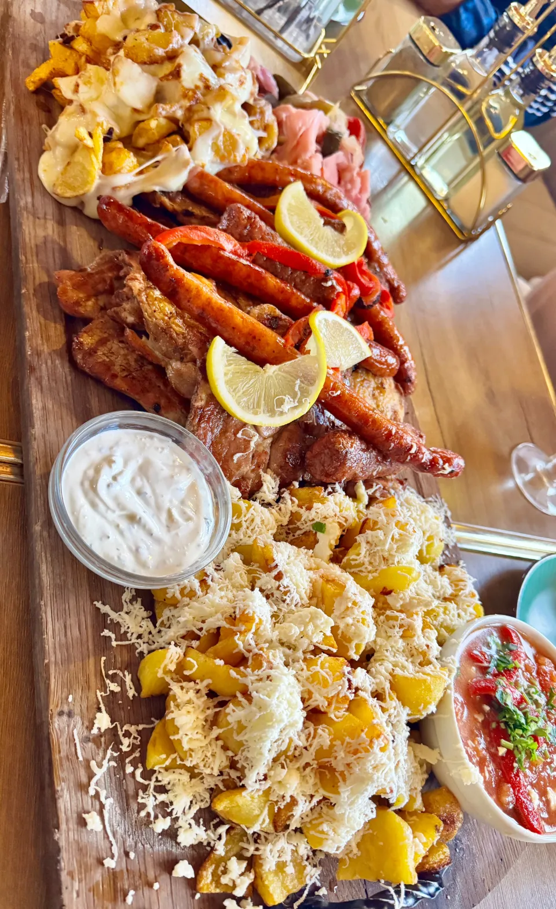
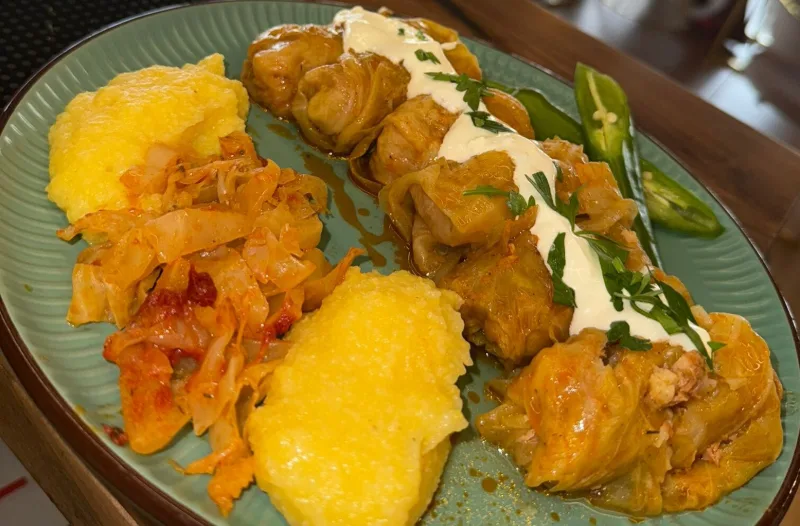
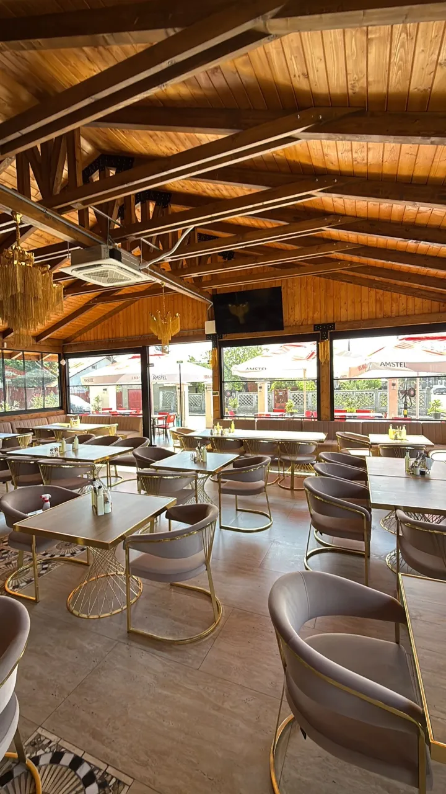
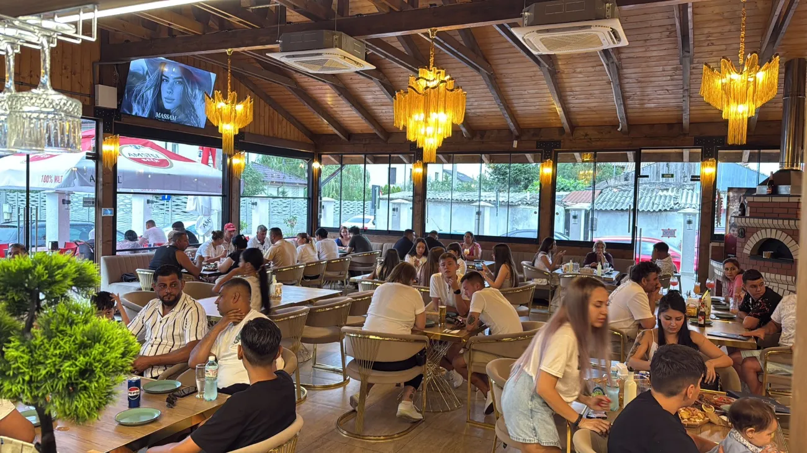
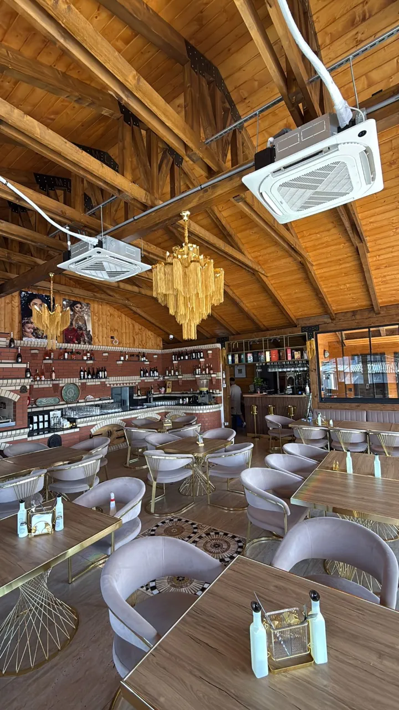
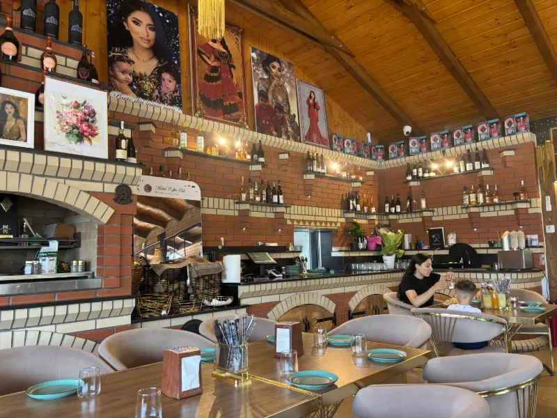
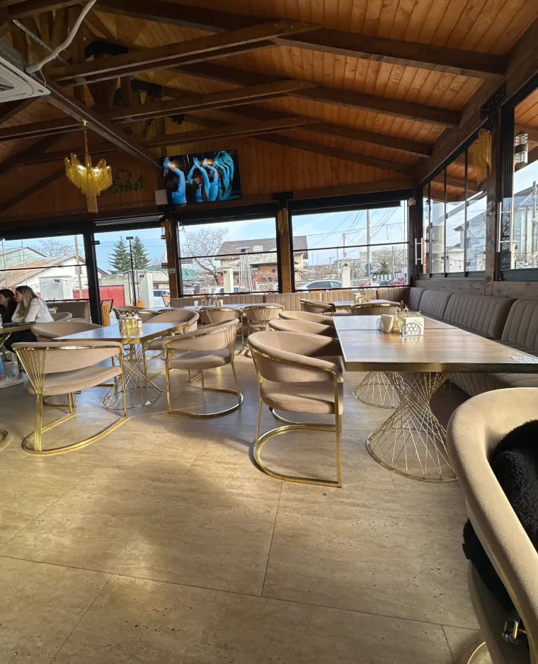
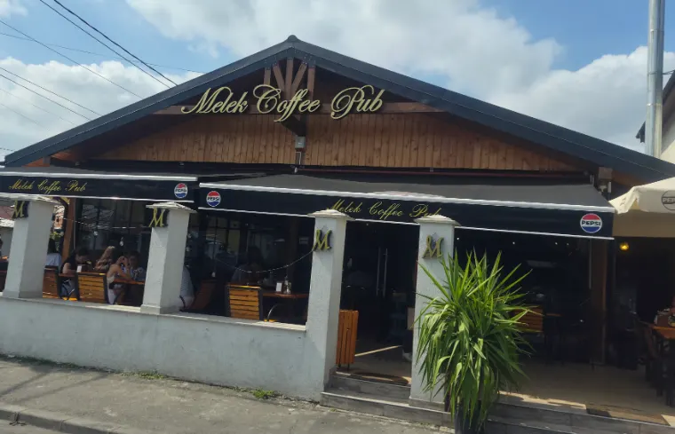

Piept de pui la grătar
25 lei250 g
Ingrediente și alergeni
Valori nutritionale/portie: valoare energetica: 178.7kcal/747.68kj,grasimi 4.12g; acizi grasi saturati 0.47g,glucide 22.99g, zaharuri 0.0g, proteine 12.25g, sare 1.37g

Grătar, mâncare gătită, ciorbe și cocktailuri în Chitila. Deschis zilnic de la 12:00 la 00:00.
Din 2023
Șoseaua Banatului 3A, Chitila
4,4 din 5 pe Google
1.693 de recenzii
Melek a deschis Melek Coffee Pub în Chitila în 2023. Pe TikTok o urmăresc 2,5 milioane de oameni, iar acolo arată platourile cu tot ce pune pe ele.
Instagram @melek.minca„Știam restaurantul de pe TikTok. […] Melek este o super femeie și a fost cea care m-a întâmpinat la intrare în restaurant.”
Platourile Melek sunt pentru 1 până la 10 persoane. Alege câți sunteți și vezi platoul potrivit din meniu, cu tot ce conține și cât costă.
persoane
Comanda e confirmată după ce îți răspundem. La masă nu se fac rezervări: intri în ordinea sosirii.
| Platou | Persoane | Gramaj | Preț |
|---|---|---|---|
| Platou Melek 1 persoană | 1 | 800 g | 80 lei |
| Platou Melek 2 persoane | 2 | 1.600 g | 160 lei |
| Platou Melek 3 persoane | 3 | 2.400 g | 240 lei |
| Platou Melek 4 persoane | 4 | 3.200 g | 320 lei |
| Platou Melek 5 persoane | 5 | 4.000 g | 400 lei |
| Platou Melek 6 persoane | 6 | 4.800 g | 480 lei |
| Platou Melek Pane 3 persoane | 3 | 1.000 g | 280 lei |
| Platou Vânătoresc 1 persoană | 1 | 800 g | 170 lei |
| Platou Melek Vânătoresc 4 persoane | 4 | 5.400 g | 640 lei |
| Platou Vânătoresc 6 persoane | 6 | 7.600 g | 960 lei |
| Platou Melek Oriental 10 persoane | 10 | – | 1.190 lei |
Grătar, mâncare gătită, ciorbe, garnituri, salate, sosuri și desert. Gramajele, prețurile, ingredientele și alergenii sunt cei din meniul Melek.

Gătim la cerere sarmale, tocane, fripturi, protap, BBQ, grătare, salate și ciorbe. Detaliile le stabilim la telefon.
Sună: 0744 307 000De la prânz până la miezul nopții: cafea, limonade, cocktailuri cu sau fără alcool, bere și o listă de vinuri românești și din import.
Prețuri pe sticla de 0,75 l.
Prețuri pe sticla de 0,75 l.
Prețuri pe pahar.
Prețuri pe sticla de 0,75 l.
| Spirtoasă | La gramaj | Sticla |
|---|---|---|
| Vodkhaz | 55 lei | 179 lei |
| Beluga Noble | 55 lei | 299 lei |
| Beluga Gold Line | 65 lei | 699 lei |
| Absolut Blue | 25 lei | 159 lei |
| Johnnie Walker Black Label | 35 lei | 299 lei |
| Johnnie Walker Gold Label | 55 lei | 599 lei |
| Johnnie Walker Blue Label | 95 lei | 2.499 lei |
| Chivas Regal 12 ani | 25 lei | 199 lei |
| Chivas Regal 15 ani | 35 lei | 299 lei |
| Chivas Regal 18 ani | 45 lei | 399 lei |
| The Glenlivet 12 ani | 45 lei | 299 lei |
| Jameson | 30 lei | 179 lei |
| Ballantine's | 25 lei | 159 lei |
| Spirtoasă | La gramaj | Sticla |
|---|---|---|
| Courvoisier VSOP | 44 lei | 449 lei |
| Martell VS | 45 lei | 249 lei |
| Martell VSOP | 45 lei | 329 lei |
| Havana Club 3 ani | 15 lei | 169 lei |
| Bumbu The Original | 45 lei | 289 lei |
| Olmeca Silver | 25 lei | 199 lei |
| Olmeca Gold | 25 lei | 219 lei |
| Beefeater London Dry Gin | 15 lei | 149 lei |
| Pălincă Bran | 25 lei | 299 lei |
| Țuică Bran | 25 lei | 249 lei |
| Vișinată Bran | 25 lei | 159 lei |
| Afinată Bran | 25 lei | 149 lei |
O sală mare sub acoperiș de lemn, cu candelabre, pereți de cărămidă și tablourile lui Melek. Când e aglomerat, intri în ordinea sosirii.






4,4din 5, din 1.693 de recenzii pe Google
„Ieri am fost la acest rustic restaurant, au mâncare foarte buna, porțile sunt mari și gustoase. Ospătarul Alex a fost foarte promt, amabil și profesionist. Nu am putut termina tot ce am comandat așa că am luat la pachet.”
„Excelentă mâncarea! Perfectă limonada! Servirea impecabilă, ambient placut. Totul la superlativ! […] Merită toată lauda. Felicitari întregii echipe!”
„Am comandat platoul pane, foarte gustos și suficient pentru două persoane. Porțiile sunt generoase, prețurile bune, iar fetele care ne-au servit au fost drăguțe.”
Recenzii copiate de pe Google Maps, cu ortografia originală; […] marchează textul omis.
Toate recenziile pe GoogleȘoseaua Banatului 3A, Chitila, Ilfov
Strada Cetății 3A, Florești, Cluj
Al doilea local Melek, lângă Cluj-Napoca. Ca la Chitila, nu se fac rezervări.
Nu. În locațiile Melek nu se fac rezervări: când restaurantul e aglomerat, intri în ordinea sosirii.
Da. Scrie-ne pe WhatsApp sau sună la 0744 307 000. Comanda e confirmată după ce îți răspundem.
De la 1 la 10 persoane. Platoul Oriental de 10 persoane vine cu o sticlă de vin Aerosoli din partea casei și foc de artificii.
Da, la cerere: sarmale, tocane, fripturi, protap, BBQ, grătare, salate și ciorbe. Detaliile le stabilim la telefon.
În meniu, la fiecare preparat, apasă „Ingrediente și alergeni”. Pentru orice întrebare, întreabă personalul înainte de comandă.
Restaurantul din Chitila are toaletă accesibilă pentru persoane în scaun cu rotile.